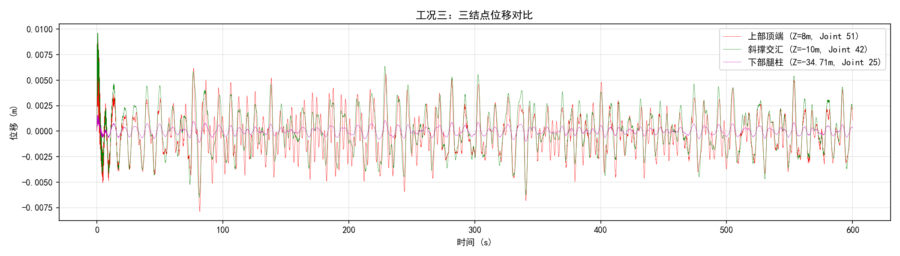
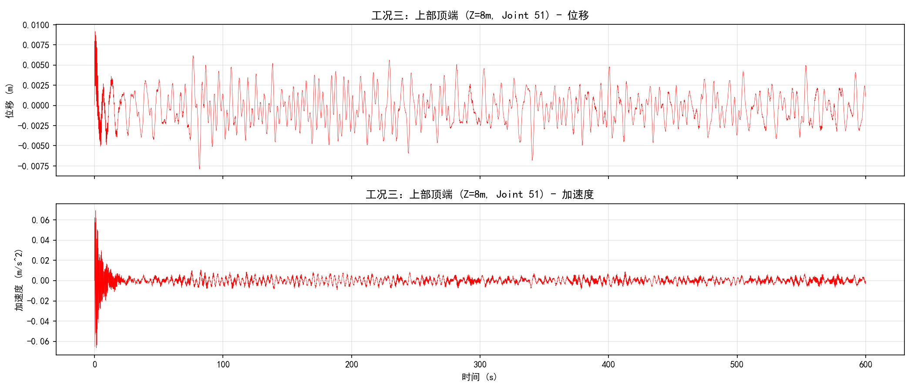
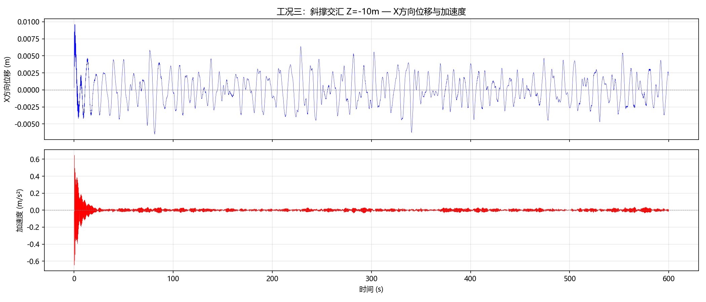
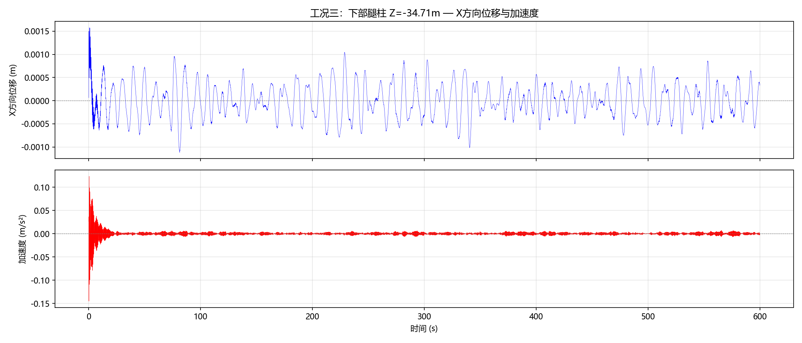

本报告基于 NREL 5MW 海上风力发电机 和 OC3 Tripod 三脚架导管架基础，使用 OpenFAST v3.4.1 进行全耦合仿真分析。
工况三：风荷载 + JONSWAP 不规则波
风荷载来自预计算时程文件 MyWindLoads.txt，通过 StC（Structural Control）模块施加到子结构上；波浪荷载由 HydroDyn 模块基于 JONSWAP 谱生成（Hs=8m, Tp=10s）。仿真时长 600 秒，监测三个关键结构结点的位移和加速度响应。
| 参数 | 值 |
|---|---|
| 额定功率 | 5 MW |
| 风轮直径 | 126 m（R=63 m） |
| 塔筒高度 | 87.6 m（自 MSL） |
| 塔筒底部高度 | 10 m（自 MSL） |
| 切入/额定/切出风速 | 3 / 11.4 / 25 m/s |
| 额定转速 | 12.1 rpm |
| 齿轮箱比 | 97:1 |
| 参数 | 值 |
|---|---|
| 总高度 | 55 m（泥面至过渡段顶） |
| 水深 | 45 m |
| 泥面深度 | -45 m |
| 过渡段顶 | +10 m |
| 导管架总重 | 约 1350 t |
| 材料 | S355 钢（E=210 GPa, rho=7850 kg/m3） |
| 主腿直径 | 3.15 m |
| 主腿壁厚 | 0.035 m |
| 斜撑直径 | 1.875 m |
| 模块 | 开关 | 说明 |
|---|---|---|
| ElastoDyn | CompElast=1 | 塔筒+叶片结构动力 |
| InflowWind | CompInflow=0 | 关闭（风荷载由 StC 提供） |
| AeroDyn | CompAero=0 | 关闭（无气动计算） |
| ServoDyn | CompServo=1 | 伺服控制 + StC |
| HydroDyn | CompHydro=1 | JONSWAP 不规则波 |
| SubDyn | CompSub=1 | 三脚架结构动力 |
| Mooring | CompMooring=0 | 固定式基础，无锚链 |
| 参数 | 值 |
|---|---|
| 波浪模型 | JONSWAP 谱（WaveMod=2） |
| 有效波高 WaveHs | 8 m |
| 谱峰周期 WaveTp | 10 s |
| 谱峰参数 WavePkShp | DEFAULT（gamma=3.3） |
| 传播方向 WaveDir | 0°（+X 方向） |
| 随机种子 | 123456789 |
| 波浪分析时长 | 3630 s |
| 波浪计算步长 | 0.25 s |
| 参数 | 值 |
|---|---|
| TMax | 600 s |
| DT | 0.008 s |
| DT_Out | 0.04 s（输出步长） |
| InterpOrder | 2（二次插值） |
均在中心柱上（X=0, Y=0），仅 Z 坐标不同：
| 结点 | 坐标 (X,Y,Z) | 位置描述 | SubDyn 映射 |
|---|---|---|---|
| 上部顶端 | (0, 0, 8m) | 中心柱顶部法兰处 | Member 57 Node 1 = Joint 51 |
| 斜撑交汇 | (0, 0, -10m) | 中心柱中上部 | Member 48 Node 1 = Joint 42 |
| 下部腿柱 | (0, 0, -34.71m) | 中心柱底端 | Member 46 Node 1 = Joint 25 |

红色：上部顶端（Z=8m）— 位移最大，峰峰值 1.4cm
绿色：斜撑交汇（Z=-10m）— 位移约 1.3cm
紫色：下部腿柱（Z=-34.71m）— 位移最小，仅 2.2mm



| 结点 | 坐标 | 位移峰峰值 | 位移标准差 | 加速度最大值 |
|---|---|---|---|---|
| 上部顶端 | Z=8m | 0.0141 m | 0.0020 m | 0.0129 m/s2 |
| 斜撑交汇 | Z=-10m | 0.0129 m | 0.0019 m | 0.0119 m/s2 |
| 下部腿柱 | Z=-34.71m | 0.0022 m | 0.0004 m | 0.0022 m/s2 |
波浪参数验证：
三个结点位移从上到下依次递减：
表明导管架结构刚度较大，变形主要集中在塔筒和上部结构。下部腿柱靠近固定端（泥面），位移趋近于零，符合固定边界条件。
| 项目 | 版本 |
|---|---|
| OpenFAST | v3.4.1（Intel Fortran, 单精度） |
| Python | 3.12 |
| 操作系统 | Windows 11 |